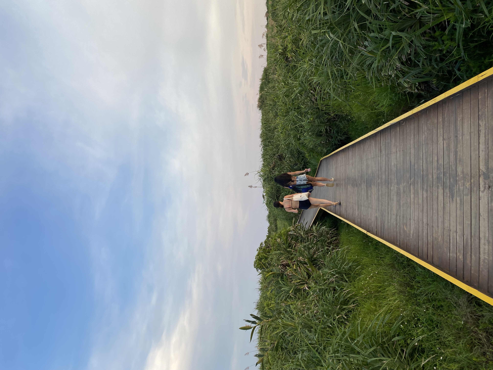
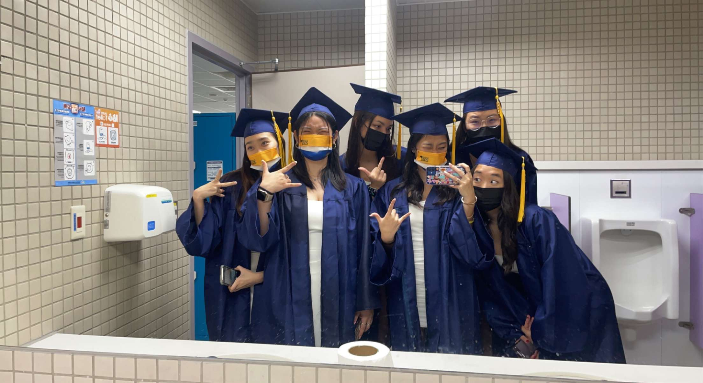
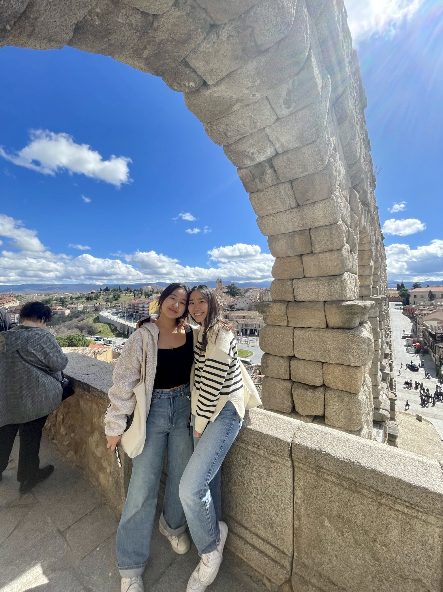

Purpose
  Lauren's Final Project:
I have created this website to showcase some of the people and places I love most.
My family and friends have supported me and shaped me into the person I am today, and I am so grateful for them. Throughout my ups and downs, these people have stuck by me. They have brought so much laughter and love into my life. It's with these people that I have created all my fondest memories.
My favorite places in the world are where all my most vivid memories are. Whether that is joy, excitement, or personal growth.
The people make the places feel like home. In Taiwan, I have my family, friends, and cat who all make me feel at peace and loved. After moving to LA for college I have grown even more appreciative of my family and hometown friends. My friends and I have grown up together so our bond is incomparable to any other friends. Taiwan is such a beautiful place filled with beauty and the nicest people.